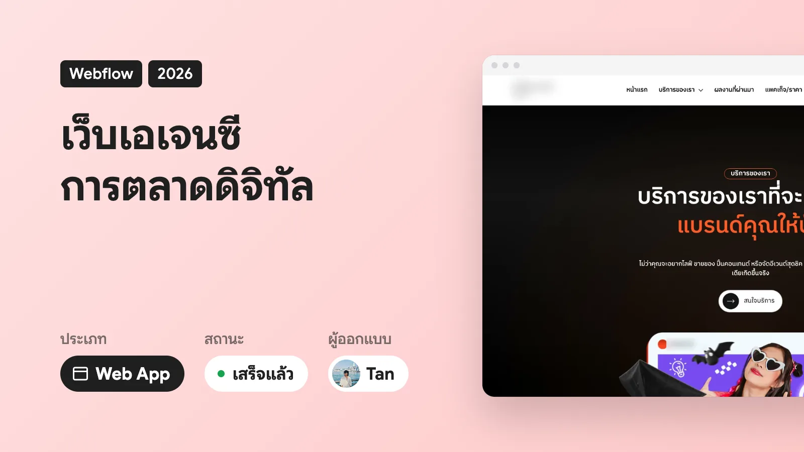
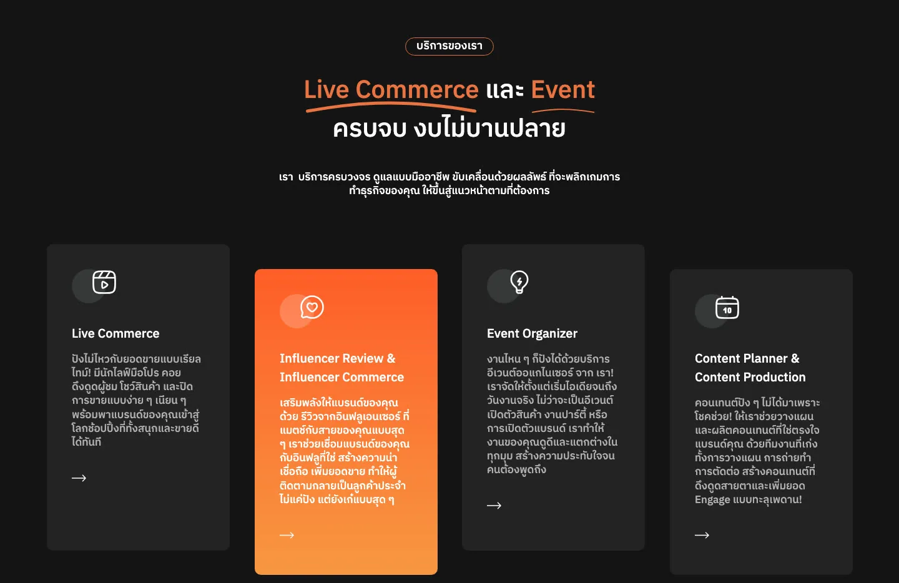
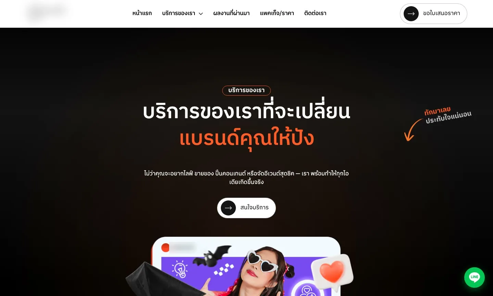
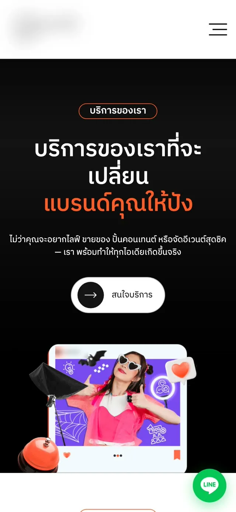
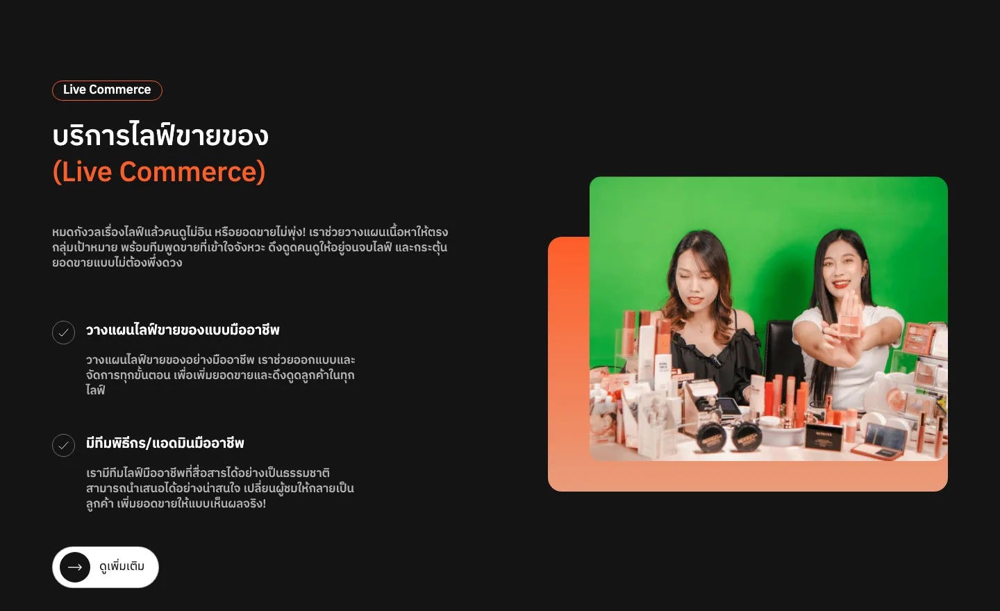
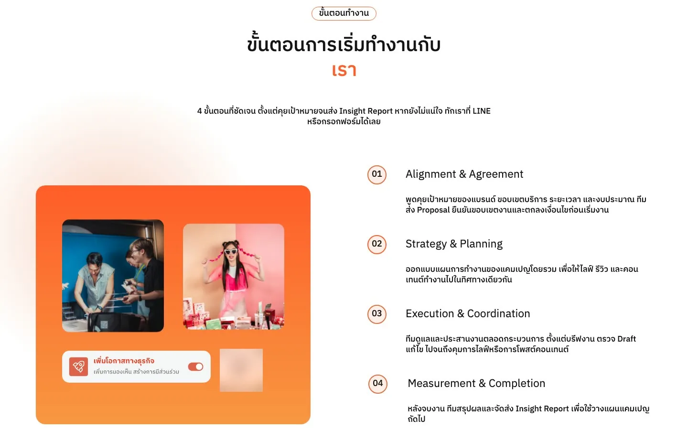
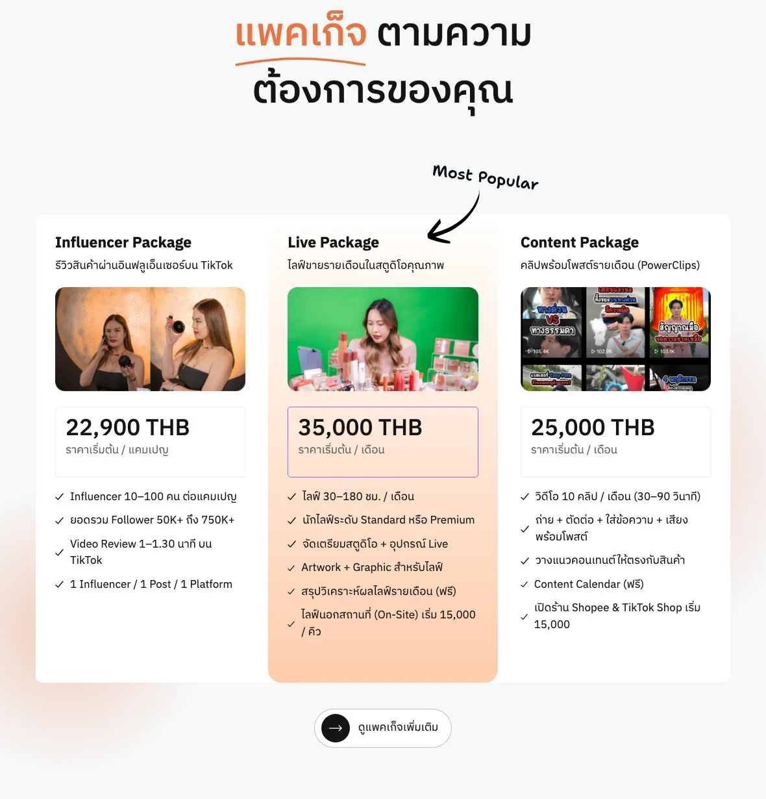
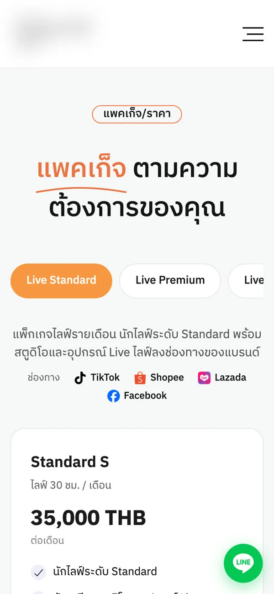
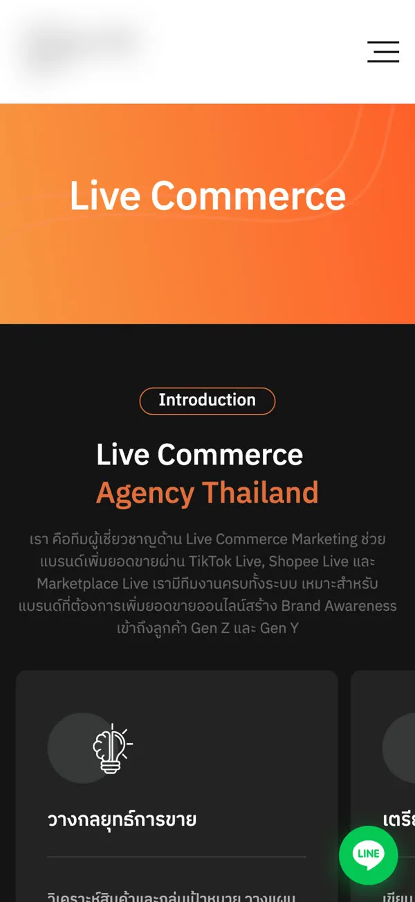
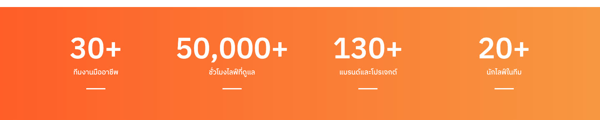

เว็บเอเจนซี Digital Marketing
เว็บเอเจนซี เป็นตัวอย่างว่าเว็บ agency ที่ดี ไม่ใช่แค่สวย แต่ต้องสื่อสารชัด มี social proof แข็งแรง และให้ลูกค้าตัดสินใจได้ทันที

เพิ่มยอดขายออนไลน์ด้วย Live Commerce, Influencer & Event ออกแบบเว็บไซต์ที่สื่อสารบริการได้ชัด ปิดการขายได้จริง
ปัญหาที่แบรนด์เจอจริงๆ
ก่อนจะออกแบบอะไร ต้องเข้าใจก่อนว่าแบรนด์ E-commerce ในไทยกำลังเจอปัญหาอะไรบ้าง เราคุยกับทีม เว็บเอเจนซี แล้วพบ pain points หลักๆ 3 เรื่อง
Live Selling ดูง่าย แต่ทำจริงยากกว่าที่คิด
แบรนด์หลายเจ้าอยากทำ Live Commerce แต่ไม่มีพิธีกร ไม่มี studio ไม่รู้จะเริ่มจากตรงไหน ลองทำเองก็ไม่ได้ยอด ลงทุนไปเยอะแต่ผลตอบรับไม่ดี
หา Influencer เองเหมือนเดาสุ่ม
ติดต่อ Influencer เอง เสี่ยงได้คนไม่ตรงกลุ่มเป้าหมาย follower อาจไม่ใช่ลูกค้าจริง จ่ายแพงแต่ยอดไม่มา เปรียบเทียบ ROI ก็ยาก
เว็บเก่าสื่อสารบริการไม่ชัด
ลูกค้าเข้ามาแล้วไม่เข้าใจว่า เว็บเอเจนซี ทำอะไรได้บ้าง ราคาเท่าไหร่ ขั้นตอนยังไง ต้องทักมาถาม กว่าจะปิดจ็อบใช้เวลานาน

วิธีแก้ปัญหาด้วย Design
จาก pain points ที่เจอ เราวาง strategy ในการออกแบบเว็บไซต์ให้ตอบโจทย์ทั้งเรื่อง branding และ conversion


- สื่อสาร Value Proposition ชัดเจน ตั้งแต่ hero section ลูกค้าต้องรู้เลยว่า เว็บเอเจนซี ช่วยเพิ่มยอดขายผ่าน Live, Influencer, Event ได้ยังไง
- Dark Theme + สีสดที่ Bold แต่ Professional ใช้โทนดำ-น้ำเงินเข้มเป็นหลัก สลับสีแดงสดเป็น accent ให้ดู agency style น่าเชื่อถือแต่ไม่น่าเบื่อ
- Pricing Packages ที่เปรียบเทียบง่าย มี 3 แพ็กเกจชัดเจน ลูกค้าเห็นราคาแล้วตัดสินใจได้ทันที ลด friction ไม่ต้องทักมาถาม
- Social Proof ที่แข็งแรง Stat counters (461M+ revenue), client logos, testimonials จริง ทำให้ลูกค้าใหม่มั่นใจ
- Process Flow 4 ขั้นตอน ลูกค้าเห็น flow การทำงานชัดเจน ลดความกังวล เข้าใจว่าจ้างแล้วจะเกิดอะไรขึ้นบ้าง
- Responsive Design ทุก Device ลูกค้าส่วนใหญ่เปิดจากมือถือ ต้องดูดีและใช้งานง่ายทั้ง desktop และ mobile
สิ่งที่สร้างขึ้นมาจริง
เราใช้ Webflow เป็นเครื่องมือหลักในการ build เพราะ iterate ได้เร็ว ปรับ design แล้วเห็นผลทันที ไม่ต้องเขียน code จากศูนย์

Dark Theme Design
สีดำ-น้ำเงินเข้มเป็นพื้นหลัก สลับสีสดดึงดูดสายตา ให้ดู bold แต่ยังคงความ professional
Animated Elements
Hover effects, transition, stat counter animation ทำให้เว็บมีชีวิต ไม่ใช่แค่หน้า static
Pricing Comparison
3 แพ็กเกจเปรียบเทียบข้างกัน ลูกค้าเลือกได้เลย ไม่ต้องอ่านยาว
Testimonials + Logos
Reviews จากลูกค้าจริง + โลโก้แบรนด์ที่เคยร่วมงาน สร้าง trust ตั้งแต่แรกเห็น
Process ที่ออกแบบให้ลูกค้าเข้าใจง่าย
เราออกแบบ 4-step process ให้ลูกค้าเห็นภาพว่าจ้าง เว็บเอเจนซี แล้วจะเกิดอะไรขึ้นบ้าง
Brief & Consult
คุยกับทีม เว็บเอเจนซี เพื่อทำความเข้าใจสินค้า กลุ่มเป้าหมาย และเป้าหมายที่ต้องการ วางแผน campaign ร่วมกัน
Strategy & Planning
วางกลยุทธ์ เลือก influencer/MC ที่เหมาะสม กำหนด timeline และ KPI ที่วัดผลได้
Production & Execution
ลงมือทำจริง ไม่ว่าจะเป็นไลฟ์ ถ่าย content รีวิวสินค้า หรือจัดอีเวนต์ ทีม เว็บเอเจนซี ดูแลครบจบ
Report & Optimize
สรุปผล วิเคราะห์ข้อมูล ปรับปรุงกลยุทธ์สำหรับ campaign ถัดไปให้ดียิ่งขึ้น

Pricing Packages ที่ออกแบบ
แสดงราคาชัดเจนบนเว็บ ลดการถาม-ตอบ ลูกค้าเปรียบเทียบแล้วตัดสินใจได้เลย
| แพ็กเกจ | ราคาเริ่มต้น | สิ่งที่ได้ |
|---|---|---|
| Live Commerce | 19,900+ บาท | พิธีกรมืออาชีพ · Studio + อุปกรณ์ครบ · วางแผน script · รายงานสรุปยอด |
| Influencer Review แนะนำ | 22,000+ บาท | คัดเลือก Influencer ตรงกลุ่ม · Brief + ดูแล content · Track performance · รายงาน ROI |
| Event Organization | 19,900+ บาท | วางแผนอีเวนต์ A-Z · ทีมงานครบจบ · Venue + Setup · ถ่ายภาพ/วิดีโอ |

เทคโนโลยีที่ใช้


บทเรียนจากโปรเจกต์นี้
เว็บ Agency ที่ดีต้อง "ว้าว" แล้วก็ "เข้าใจ" ภายใน 3 วินาที — ตอนแรกออกแบบ dark theme สวยมาก แต่ลูกค้าเข้ามาแล้วไม่รู้ว่าขายอะไร จนเพิ่ม stat counters + pricing ชัดๆ ลูกค้าเริ่มกดติดต่อเอง ไม่ต้องรอ salesman ตาม — สิ่งที่เจ๋งคือ Visual กับ Message ไม่ขัดกัน มันช่วยกันได้
"บอกราคาเลย" กล้าๆ หน่อย — lead quality ดีขึ้นทันที — หลาย agency ซ่อนราคาเพราะกลัวลูกค้าหนี แต่พอ เว็บเอเจนซี โชว์ราคาเริ่มต้น 19,900 บาทชัดเจนบนเว็บ กลับได้ผลตรงข้าม คนที่ทักมาคือคนพร้อมจ่ายจริง ไม่เสียเวลาคุยกับคนแค่ถามราคา — Pricing Transparency ไม่ได้ไล่ลูกค้า มัน filter ลูกค้าให้
ตัวเลข 461 ล้าน บนหน้าเว็บ ทำให้คนหยุดอ่าน — Social proof แบบ "เราทำให้ลูกค้าสร้างรายได้ 461M+" ทรงพลังกว่า "เราเก่ง เราเป็นมืออาชีพ" หลายเท่า ผสมกับ logo ลูกค้าจริง + testimonials = ลูกค้าใหม่ไม่ต้องคิดนาน รู้สึกว่า "เจ้านี้ทำได้จริง" — บทเรียนคือ ให้ผลงานพูดแทน อย่าพูดเอง
Webflow ทำให้ designer ส่งงาน production ได้เอง — เร็วกว่า dev cycle 3 เท่า — ปกติต้องออกแบบใน Figma แล้วส่ง dev build อีก 2-3 สัปดาห์ แต่ Webflow ให้ designer สร้าง responsive site จริงได้เลย เปลี่ยน copy, ปรับ layout, เพิ่ม animation ไม่ต้องรอใคร — สิ่งที่ได้คือ ownership ของงานตัวเอง ตั้งแต่ design ยัน deploy
ตัวเลขที่พูดแทน
ผลงานจริงที่ เว็บเอเจนซี สร้างให้ลูกค้า แสดงบนเว็บไซต์เป็น social proof
